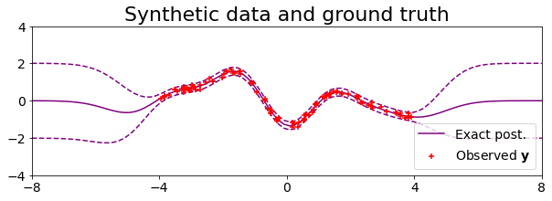
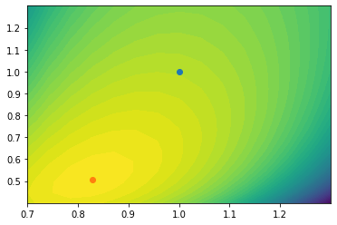

import tensorflow as tf
import matplotlib.pyplot as plt
import numpy as np
from abc import ABC, abstractmethod
class RBFcovariance(ABC, tf.keras.Model):
"""
General RBF-type covariance of the form
k(x1, x2) = k(||x1 - x2||)
for some ||.|| norm. Example members of this family are
- Exponentiated Quadratic (EQ)
- Laplace
- Cauchy
- Matern
This abstract base class requires the functions `norm` and `sample_rff`
to be specified.
"""
def __init__(self,
log_coeff,
log_scales,
dim,
dtype,
name='eq_covariance',
**kwargs):
super().__init__(name=name, dtype=dtype, **kwargs)
# Convert parameters to tensors
log_coeff = tf.convert_to_tensor(log_coeff, dtype=dtype)
log_scales = tf.convert_to_tensor(log_scales, dtype=dtype)
# Reshape parameter tensors
log_coeff = tf.squeeze(log_coeff)
log_scales = tf.reshape(log_scales, (-1,))
# Set input dimensionality
self.dim = dim
# Set EQ parameters
self.log_scales = tf.Variable(log_scales)
self.log_coeff = tf.Variable(log_coeff)
@property
def scales(self):
return tf.math.exp(self.log_scales)
@property
def coeff(self):
return tf.math.exp(self.log_coeff)
@abstractmethod
def norm(self):
return
@abstractmethod
def sample_omega(self, x, num_features):
pass
def sample_rff_functions(self, x, num_samples, num_features):
# Sample omegas of the Fourier features
omega = self.sample_omega(num_samples=num_samples,
num_features=num_features)
# Scale omegas by lengthscale -- same operation for all rbf kernels
omega = omega / self.scales[None, None, :]
# Sample phase shifts phi of the Fourier features
phi = np.random.uniform(low=0.,
high=(2 * np.pi),
size=(num_functions, num_features, 1))
features = np.cos(np.einsum('sfd, nd -> sfn', omega, x) + phi)
features = (2 / num_features) ** 0.5 * features * coefficient
functions = np.einsum('sf, sfn -> sn', weights, features)
return functions, features
def __call__(self,
x1,
x2,
diag=False,
epsilon=None):
# Convert to tensors
x1 = tf.convert_to_tensor(x1, dtype=self.dtype)
x2 = tf.convert_to_tensor(x2, dtype=self.dtype)
# Get vector of lengthscales
scales = self.scales
# If calculating full covariance, add dimensions to broadcast
if not diag:
x1 = x1[:, None, :]
x2 = x2[None, :, :]
scales = self.scales[None, None, :]
# Compute quadratic, exponentiate and multiply by coefficient
cov = self.coeff ** 2 * self.rbf((x1 - x2) / scales)
# Add jitter for invertibility
if epsilon is not None:
cov = cov + epsilon * tf.eye(cov.shape[0], dtype=self.dtype)
return cov
import tensorflow as tf
import tensorflow_probability as tfp
class ConstantMean(tf.keras.Model):
def __init__(self,
dtype,
name='constant_mean'):
super().__init__(name=name, dtype=dtype)
self.constant = tf.convert_to_tensor(tf.constant(0., dtype=dtype))
def __call__(self, x):
return self.constant * tf.ones(x.shape[0], dtype=self.dtype)
class EQcovariance(tf.keras.Model):
def __init__(self,
log_coeff,
log_scales,
dim,
dtype,
name='eq_covariance',
**kwargs):
super().__init__(name=name, dtype=dtype, **kwargs)
# Convert parameters to tensors
log_coeff = tf.convert_to_tensor(log_coeff, dtype=dtype)
log_scales = tf.convert_to_tensor(log_scales, dtype=dtype)
# Reshape parameter tensors
log_coeff = tf.squeeze(log_coeff)
log_scales = tf.reshape(log_scales, (-1,))
# Set input dimensionality
self.dim = dim
# Set EQ parameters
self.log_scales = tf.Variable(log_scales)
self.log_coeff = tf.Variable(log_coeff)
def __call__(self,
x1,
x2,
diag=False,
epsilon=None):
# Convert to tensors
x1 = tf.convert_to_tensor(x1, dtype=self.dtype)
x2 = tf.convert_to_tensor(x2, dtype=self.dtype)
# Get vector of lengthscales
scales = self.scales
# If calculating full covariance, add dimensions to broadcast
if not diag:
x1 = x1[:, None, :]
x2 = x2[None, :, :]
scales = self.scales[None, None, :] ** 2
# Compute quadratic, exponentiate and multiply by coefficient
quad = - 0.5 * (x1 - x2) ** 2 / scales
quad = tf.reduce_sum(quad, axis=-1)
eq_cov = self.coeff ** 2 * tf.exp(quad)
# Add jitter for invertibility
if epsilon is not None:
eq_cov = eq_cov + epsilon * tf.eye(eq_cov.shape[0],
dtype=self.dtype)
return eq_cov
@property
def scales(self):
return 1. + 0. * tf.math.exp(self.log_scales)
@property
def coeff(self):
return 1. + 0. * tf.math.exp(self.log_coeff)
# Set random seed and tf.dtype
np.random.seed(0)
dtype = tf.float64
# Num. observations (N)
N = 100
# EQ covariance hyperparameters
log_coeff = 0.
log_scale = 0.
noise = 1e-1
dim = 1
# Initialise covariance
ground_truth_cov = EQcovariance(log_coeff=log_coeff,
log_scales=log_scale,
dim=dim,
dtype=dtype)
# Pick inputs at random
x_train = np.random.uniform(low=-4., high=4., size=(N, 1))
# Compute covariance matrix terms
K_train_train = ground_truth_cov(x_train, x_train, epsilon=1e-12)
I_noise = noise ** 2 * np.eye(N)
# Sample f_ind | x_ind
y_train = np.dot(np.linalg.cholesky(K_train_train + I_noise),
np.random.normal(loc=0., scale=1., size=(N, 1)))
# Locations to plot mean and variance of generative model, y_plot | f_ind, x_plot
x_plot = np.linspace(-8., 8., 100)[:, None]
# Covariances between inducing points and input locations
K_train_plot = ground_truth_cov(x_train, x_plot)
K_plot_train = ground_truth_cov(x_plot, x_train)
K_plot_diag = ground_truth_cov(x_plot, x_plot, diag=True)
# Mean and standard deviation of y_plot | f_ind, x_plot
y_plot_mean = np.dot(K_plot_train, np.linalg.solve(K_train_train + I_noise, y_train))[:, 0]
f_plot_var = K_plot_diag - np.diag(np.dot(K_plot_train,
np.linalg.solve(K_train_train + I_noise, K_train_plot)))
y_plot_var = f_plot_var + noise ** 2
y_plot_std = y_plot_var ** 0.5
# Plot inducing points and observed data
plt.figure(figsize=(10, 3))
# Plot exact posterior predictive
plt.plot(x_plot, y_plot_mean - 2*y_plot_std, '--', color='purple', zorder=2)
plt.plot(x_plot, y_plot_mean, color='purple', zorder=2, label='Exact post.')
plt.plot(x_plot, y_plot_mean + 2*y_plot_std, '--', color='purple', zorder=2)
# Plot sampled data
plt.scatter(x_train,
y_train,
color='red',
marker='+',
zorder=3,
label=r'Observed $\mathbf{y}$')
# Plot formatting
plt.title('Synthetic data and ground truth', fontsize=22)
plt.xticks(np.linspace(-8, 8, 5), fontsize=14)
plt.yticks(np.linspace(-4, 4, 5), fontsize=14)
plt.legend(loc='lower right', fontsize=14)
plt.xlim([-8., 8.])
plt.show()

def plot(model,
ground_truth_cov,
x_pred,
x_train,
y_train,
x_ind_init,
step):
# Get exact and approximate posterior predictive
vfe_mean, vfe_var = model.post_pred(x_pred)
# Covariances between inducing points and input locations
K_train_plot = ground_truth_cov(x_train, x_plot)
K_plot_train = ground_truth_cov(x_plot, x_train)
K_plot_diag = ground_truth_cov(x_plot, x_plot, diag=True)
# Mean and standard deviation of y_plot | f_ind, x_plot
exact_mean = np.dot(K_plot_train, np.linalg.solve(K_train_train + I_noise,
y_train))[:, 0]
exact_var = K_plot_diag - np.diag(np.dot(K_plot_train,
np.linalg.solve(K_train_train + I_noise,
K_train_plot)))
exact_std = (exact_var + noise ** 2) ** 0.5
x_pred = x_pred[:, 0].numpy()
x_ind = model.x_ind[:, 0].numpy()
vfe_mean = vfe_mean.numpy()
vfe_var = vfe_var.numpy()
plt.figure(figsize=(8, 3))
# Plot posterior predictive
plt.plot(x_pred,
vfe_mean,
color='black',
zorder=1,
label='Approx. Post.')
plt.fill_between(x_pred,
vfe_mean - 2 * vfe_var ** 0.5,
vfe_mean + 2 * vfe_var ** 0.5,
color='gray',
alpha=0.3)
# Plot exact posterior
plt.plot(x_plot,
exact_mean - 2*exact_std,
'--',
color='purple',
zorder=1)
plt.plot(x_plot,
exact_mean,
color='purple',
zorder=1)
plt.plot(x_plot,
exact_mean + 2*exact_std,
'--',
color='purple',
zorder=1,
label='Exact Post.')
# Plot training data
plt.scatter(x_train, y_train, color='red', marker='+', zorder=2)
# Plot initial inducing points
plt.scatter(x_ind_init,
-5.5 * tf.ones_like(x_ind_init),
color='green',
marker='+',
label=r'Init. $\bar{\mathbf{X}}$',
zorder=2)
# Plot current inducing points
plt.scatter(x_ind,
-5. * tf.ones_like(x_ind),
color='blue',
marker='+',
label=r'Curr. $\bar{\mathbf{X}}$',
zorder=2)
sample = model.sample_posterior(num_samples=num_samples)
plt.scatter(model.x_ind[:, 0], sample[:, 0], marker='o', s=100, color='k')
# Format plot
plt.title(f'VFE after {step} optimisation steps', fontsize=18)
# plt.xticks(np.arange(-10, 11, 4), fontsize=14)
# plt.yticks(np.arange(-6, 7, 3), fontsize=14)
# plt.xlim([-8., 8.])
# plt.ylim([-8., 4.])
plt.legend(loc='lower right', fontsize=10)
plt.show()
def print_info(model, step):
free_energy = model.free_energy()
print(f'Step: {step:5>} '
f'Free energy: {free_energy.numpy():8.3f} '
f'Coeff: {model.cov.coeff.numpy():5.2f} '
f'Scales: {[round(num, 3) for num in model.cov.scales.numpy()]} '
f'Noise: {model.noise.numpy():5.2f}')
class VFEGP(tf.keras.Model):
def __init__(self,
x_train,
y_train,
x_ind_init,
mean,
cov,
log_noise,
dtype,
name='vfe_gp',
**kwargs):
super().__init__(name=name, dtype=dtype, **kwargs)
# Set training data and inducing point initialisation
self.x_train = tf.convert_to_tensor(x_train, dtype=dtype)
self.y_train = tf.convert_to_tensor(y_train, dtype=dtype)
# Set inducing points
self.x_ind = tf.convert_to_tensor(x_ind_init, dtype=dtype)
self.x_ind = tf.Variable(self.x_ind)
# Set mean and covariance functions
self.mean = mean
self.cov = cov
# Set log of noise parameter
self.log_noise = tf.convert_to_tensor(log_noise,
dtype=dtype)
self.log_noise = tf.Variable(self.log_noise)
def post_pred(self, x_pred):
# Number of training points
N = self.y_train.shape[0]
M = self.x_ind.shape[0]
# Compute covariance terms
K_ind_ind = self.cov(self.x_ind, self.x_ind, epsilon=1e-4)
K_train_ind = self.cov(self.x_train, self.x_ind)
K_ind_train = self.cov(self.x_ind, self.x_train)
K_pred_ind = self.cov(x_pred, self.x_ind)
K_ind_pred = self.cov(self.x_ind, x_pred)
K_pred_pred_diag = self.cov(x_pred, x_pred, diag=True)
# Compute shared matrix and its cholesky:
# L = chol(K_ind_ind)
# U = iL K_ind_train
# A = U / noise
# B = I + A A.T
L = tf.linalg.cholesky(K_ind_ind)
LT = tf.transpose(L, (1, 0))
U = tf.linalg.triangular_solve(L, K_ind_train, lower=True)
A = U / self.noise
B = tf.eye(M, dtype=self.dtype) + tf.matmul(A, A, transpose_b=True)
B_chol = tf.linalg.cholesky(B)
# Compute mean
diff = self.y_train # - self.mean(self.x_train)[:, None]
beta = tf.linalg.cholesky_solve(B_chol, tf.matmul(U, diff))
beta = tf.linalg.triangular_solve(LT, beta, lower=False)
mean = tf.matmul(K_pred_ind / self.noise ** 2, beta)[:, 0]
C = tf.linalg.triangular_solve(L, K_ind_pred)
D = tf.linalg.triangular_solve(B_chol, C)
# Compute variance
var = K_pred_pred_diag + self.noise ** 2
var = var - tf.linalg.diag_part(tf.matmul(C, C, transpose_a=True))
var = var + tf.linalg.diag_part(tf.matmul(D, D, transpose_a=True))
return mean, var
def free_energy(self):
# Number of training points
N = self.y_train.shape[0]
M = self.x_ind.shape[0]
# Compute covariance terms
K_ind_ind = self.cov(self.x_ind, self.x_ind, epsilon=1e-6)
K_train_ind = self.cov(self.x_train, self.x_ind)
K_ind_train = self.cov(self.x_ind, self.x_train)
K_train_train = self.cov(self.x_train, self.x_train)
# Compute shared matrix and its cholesky:
# L = chol(K_ind_ind)
# U = iL K_ind_train
# A = U / noise
# B = I + A A.T
L = tf.linalg.cholesky(K_ind_ind)
U = tf.linalg.triangular_solve(L, K_ind_train, lower=True)
A = U / self.noise
B = tf.eye(M, dtype=self.dtype) + tf.matmul(A, A, transpose_b=True)
B_chol = tf.linalg.cholesky(B)
# Compute log-normalising constant of the matrix
log_pi = - N / 2 * tf.math.log(tf.constant(2 * np.pi, dtype=self.dtype))
log_det_B = - tf.reduce_sum(tf.math.log(tf.linalg.diag_part(B)))
log_det_noise = - N / 2 * tf.math.log(self.noise ** 2)
# Log of determinant of normalising term
log_det = log_pi + log_det_B + log_det_noise
# Compute quadratic form
diff = self.y_train - self.mean(self.x_train)[:, None]
c = tf.linalg.triangular_solve(B_chol, tf.matmul(A, diff), lower=True) / self.noise
quad = - 0.5 * tf.reduce_sum((diff / self.noise) ** 2)
quad = quad + 0.5 * tf.reduce_sum(c ** 2)
# Compute trace term
trace = - 0.5 * tf.linalg.trace(K_train_train) / self.noise ** 2
trace = trace + 0.5 * tf.linalg.trace(tf.matmul(A, A, transpose_b=True))
free_energy = (log_det + quad + trace) / N
return free_energy
@property
def noise(self):
return 1e-1 + 0. * tf.math.exp(self.log_noise)
def sample_posterior(self, num_samples):
"""
Returns:
samples [lambda] : list of samples, as lambdas, from GP posterior
"""
# φ(fm) = N(fm|µ, C), (10) where
# µ = σ^-2 Kmm Σ^-1 Kmn y,
# C = Kmm L.-T(I + σ^−2 L^-1 Kmn Knm L.-T)^-1 L^-1 Kmm
M = self.x_ind.shape[0]
K_ind_ind = self.cov(self.x_ind, self.x_ind, epsilon=1e-6)
K_ind_train = self.cov(self.x_ind, self.x_train)
L = tf.linalg.cholesky(K_ind_ind)
W = tf.linalg.triangular_solve(L, K_ind_ind, lower=True)
WT = tf.transpose(W, (1, 0))
U = tf.linalg.triangular_solve(L, K_ind_train, lower=True)
A = U / self.noise
B = tf.eye(M, dtype=self.dtype) + tf.matmul(A, A, transpose_b=True)
B_chol = tf.linalg.cholesky(B)
cov_chol = tf.linalg.triangular_solve(B_chol, W, lower=True)
mean = WT @ tf.linalg.cholesky_solve(B_chol, tf.linalg.triangular_solve(L, K_ind_train) @ self.y_train)
mean = mean / self.noise ** 2
rand = tf.random.normal(shape=(M, 1), dtype=self.dtype)
u = mean + cov_chol @ rand
return u
# rff = self.cov.sample_rff(num_samples=num_samples)
# return rff
# Set random seed and tensor dtype
tf.random.set_seed(1)
dtype = tf.float64
# Number GP constants
M = 30
inducing_range = (-4., 4.)
log_noise = -2.
log_coeff = 0.
log_scales = [0.]
num_samples = 10
# Define mean and covariance
mean = ConstantMean(dtype=dtype)
cov = EQcovariance(log_coeff=log_coeff,
log_scales=log_scales,
dim=1,
dtype=dtype)
# Initial locations of inducing points
x_ind_dist = tfp.distributions.Uniform(low=inducing_range[0], high=inducing_range[1])
x_ind_init = x_ind_dist.sample(sample_shape=(M, 1))
x_ind_init = tf.cast(x_ind_init, dtype=dtype)
# Define sparse VFEGP
vfe_gp = VFEGP(mean=mean,
cov=cov,
log_noise=log_noise,
x_train=x_train,
y_train=y_train,
x_ind_init=x_ind_init,
dtype=dtype)
num_steps = 1000
optimizer = tf.keras.optimizers.SGD(1e-1, momentum=1e-1)
x_pred = tf.linspace(-8., 8., 100)[:, None]
x_pred = tf.cast(x_pred, dtype=tf.float64)
losses = []
for step in range(num_steps + 1):
with tf.GradientTape() as tape:
free_energy = vfe_gp.free_energy()
loss = - free_energy
losses.append(free_energy)
# Print information and plot at start and end
if step % num_steps == 0:
print_info(vfe_gp, step)
plot(vfe_gp,
ground_truth_cov,
x_pred,
x_train,
y_train,
x_ind_init,
step)
gradients = tape.gradient(loss, vfe_gp.trainable_variables)
optimizer.apply_gradients(zip(gradients, vfe_gp.trainable_variables))
x_ind_optimised = vfe_gp.x_ind
vfe_scale_optimised = vfe_gp.cov.scales[0]
vfe_coeff_optimised = vfe_gp.cov.coeff
Step: 0 Free energy: 0.000 Coeff: 1.00 Scales: [1.0] Noise: 0.10
Step: 1000 Free energy: 0.107 Coeff: 1.00 Scales: [1.0] Noise: 0.10
plt.plot(losses)
[<matplotlib.lines.Line2D at 0x14b2b8710>]
res1 = 15
res2 = 20
scales = tf.cast(tf.linspace(0.7, 1.3, res1), dtype=dtype)
coeffs = tf.cast(tf.linspace(0.4, 1.3, res2), dtype=dtype)
free_energies = np.zeros(shape=(res1, res2))
for i, scale in enumerate(scales):
for j, coeff in enumerate(coeffs):
cov = EQcovariance(log_coeff=np.log(coeff),
log_scales=[np.log(scale)],
dim=1,
dtype=dtype)
vfe_gp = VFEGP(mean=mean,
cov=cov,
log_noise=np.log(0.1),
x_train=x_train,
y_train=y_train,
x_ind_init=x_ind_optimised,
dtype=dtype)
free_energies[i, j] = vfe_gp.free_energy().numpy()
x, y = np.meshgrid(scales, coeffs)
plt.contourf(x, y, free_energies.T, levels=50)
plt.scatter([1.], [1.])
plt.scatter([vfe_scale_optimised.numpy()], [vfe_coeff_optimised.numpy()])
plt.show()
